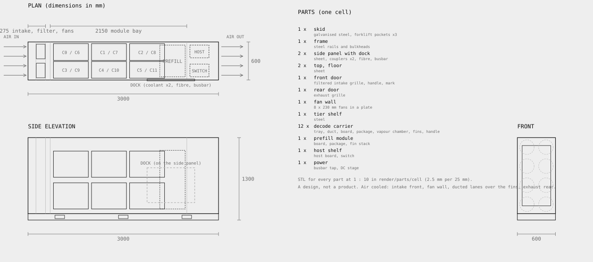

One part, four sizes.
A node is a tiny complete computer that breathes front to back. One on a desk hosts a model. Six stand in a tray, eighty-four in a pod, pods in a row. Designs, not products: nothing here exists in hardware, and every claim says what would have to be measured for it to hold.

The module.
Decode reads every weight and every cached token once per step and does little arithmetic on them. The part that serves it well is memory first: a small compute die in the middle of a ring of eight memory stacks, on one interposer, sized to its bandwidth and run at a capped clock by design. On the AMD Ryzen AI Max+ 395, capping the shader clock at 1,800 MHz cut joules per correct answer 19 to 28% at accuracy within a point. Eight requests at once cut energy per token by 72%; the module is meant to run eight or more sequences per step, always.

The carrier, and the desk unit.
The module lives in a carrier: a tray with the board, a vapour chamber the length of the tray, a fin stack that runs front to back inside its own duct, and a handle. It is the one part every size shares. One carrier in a small air-cooled enclosure is the desk unit, 0.32 by 0.28 by 0.62 metres: a filtered intake at the front, the carrier's own duct, two fans at the back, a host board underneath, power and two network ports at the rear. It runs the same scheduler and the same operating system as a cell, for someone hosting a model at home or in an office.
What it would do
A 7B at eight requests at once, under the cap, at about 190 tokens per second and 111 joules per correct answer, modules only, which is the measured figure for the part it is built around. A 32B fits in its 128 GB. The enclosure, the fans and the host add an overhead we have not measured.

The cell, air cooled.
A low, narrow, deep block, 0.6 by 1.2 by 3.0 metres, the proportions of an accelerator card lying flat. Air enters through the whole front door, a filtered grille, passes a wall of eight fans, runs front to back through ducted lanes over twelve carriers in two tiers of six, then over the prefill module's tall fin stack, and leaves through the rear door. The host board and the switch sit on a shelf in the exhaust plenum. Every carrier pulls out from the front. Each long side is a blind-mate dock with two coolant couplers for a liquid option, a fibre plate and a busbar cover.
Alone, or a hundred in a row
Docked side by side, the busbar and the fibre pass through every cell: a row takes power at one end and its switches form one fabric. A row of a hundred is one unit to the scheduler and a hundred units to the forklift. Pull one out and its neighbours' docks close.
What would have to be true
Eight fans move enough air through twelve ducted lanes to hold a capped module at its measured 81 to 87 W each, at a fan power that keeps wall energy per correct answer below the single-chip figure. The idle floor of a cell at low load stays below the sum of its parts idling. None of these are measured.


On paper, and in parts.
The drawings above are generated from the same numbers the renders are built from: plan, side elevation and front, dimensions in millimetres, the air path marked, the parts listed. The cell's twenty-five parts export as STL at 1:10, so a scale model can be printed and the layout checked by hand before anything is cut from sheet. A design, not a product; the parts list is a shape, not a bill of materials, and no price goes here until one exists.
What is inside, and whose it is.
Buy the silicon, own everything above it. The decode module is built around a part that exists and that we measure, an AMD Ryzen AI Max+ 395 class part with 128 GB of unified memory; the prefill module around a discrete GPU; the host is an ordinary server CPU; the switch is bought. What Spliced makes is the carrier, the cold plate, the capped clock, the enclosure, the dock, the operating system and the scheduler. That is most of what a cell is.
Our own chip, or not
The measurements say decode wants a small die with as much bandwidth as can be attached, at a fixed low clock, and no vendor sells exactly that. That is a real argument for a chip. Against it, today: the expensive part of an accelerator is the memory stack and the packaging, which we would buy anyway, and a two-person group cannot tape out a die. The test is in our software: once cells are measured, split a token's joules into memory traffic, compute, interconnect and overhead. If compute is a small share, a bought part is already near the roofline. We do not know which yet, and will not say we do.
Spliced Linux
Not a distribution: an appliance image. An upstream kernel with the accelerator drivers we measure with, a read-only root built from a recipe, two slots with signed whole-image updates, one service manager, and one workload, the scheduler. The same image runs the desk unit and the cell. The clock cap is set at boot and verified under load; every unit reports package power, clock and busy for every module, and the number it reports is the number we publish.
V1: tiny computers, by the rack.
The cell above is a concept. V1 is built around the board already on our bench, the AMD Ryzen AI Max+ 395 with 128 GB of memory, in a shell of our own: narrow, deep and tall, 60 by 240 by 120 millimetres, the board standing on edge, the heatsink's fins running front to back, a grille the full front, two fans at the rear beside the ports. That is the node. It breathes front to back on its own, so one stands on a desk as the local-hosting product and six stand side by side in a tray. Fourteen trays, eighty-four nodes, make a pod. Pods in a row, with a cold aisle in front and a hot aisle behind, are the cluster. The shell and its heatsink are the only custom parts.

The node.
It runs a 7B at eight requests at once under a capped clock at about 190 tokens per second and 111 joules per correct answer, the measured figure for its package, and a 32B fits in its memory. What is not measured yet is the whole box at the wall, its blowers and supply included, under the cap; that is a plug-in meter and an afternoon, and it is first on the list.

Why this shape, and the grid.
The most efficient box for air is the one where air goes in one face, along the fins, and out the opposite face with no turn: the least fan power per watt removed, every fin in the stream, and a box that packs edge to edge on its closed faces. The board standing on edge sets the depth, the heatsink sets the height, and the width is the board plus the fins plus the fan. So the node is narrow, deep and tall.
Each side and the top and bottom carry a recessed blind-mate dock with two alignment pins: power passes through and the link is a 10 gigabit pair. Nothing is on the front or the rear, so the air path never changes. Push two nodes together and they are one machine; four make a 2 by 2 grid on a desk, 32B class with headroom, on one power lead and one network cable.

The tray: six across.
The bought box breathes through its top and sides and cannot be packed; the Spliced shell breathes front to back and can. A 3U tray at standard rack width holds six nodes standing side by side, 12 millimetres apart, one row deep, each pulling its own air through the tray, with a fan plate at the rear that empties the plenum. No host board: every node is its own host. The tray carries power distribution and a badge; each node's 10 gigabit port cables to the pod's switch.

The pod, and what the budget says.
Fourteen trays, eighty-four nodes, a power shelf, two switches: about 7.6 kilowatts busy on the measured per-node package figure plus a placeholder for each node's fans and supply and the tray fans, and about 16,000 tokens per second on a 7B. The budget in our scheduler passes its airflow, feed and idle checks on paper. It also says the design's first fight is everything around the node: fans, the switch, conversion losses and idle are nearly as much power as the nodes themselves at low load. The row of pods below sits in hot-aisle containment like any row.
What would have to be true, in order of cost
The node's wall power under the cap, idle and busy: a plug-in meter. One board in the Spliced shell holds 1,800 MHz at a 35 degree inlet on its own two fans: one shell, one afternoon, a thermocouple and the power log. Six in a tray hold it with the tray's fans running. Eighty-four stay within a 20 degree rise at the hot-aisle face. A full pod's joules per correct answer at the wall. Nothing is measured yet, and every capped run so far held its clock without a temperature on record.